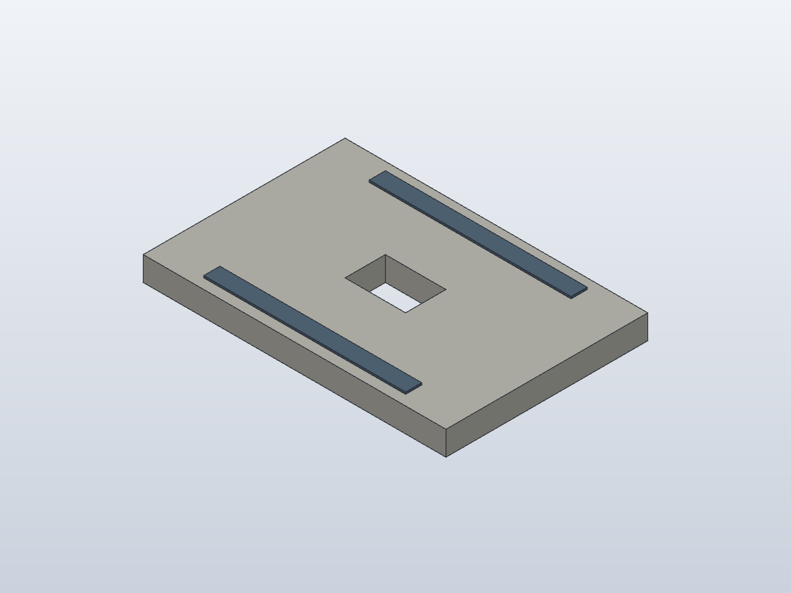

Læs direkte i browseren
Hvad gør en tykkere plade ved klimatallet?
Følg ét konkret valg fra modelmål til materialemængde, masse og produktionsklima. Tallene er fra vores dokumenterede beton- og ståleksempel.

Begynd med ét valg
En betonplade gøres tykkere: fra 100 til 120 mm. Pladens længde og bredde er de samme, og de to stålskinner ændrer ikke størrelse. Hvad betyder det for mængder, masse og produktionsklima?
Det er et gemt, kontrolleret regneeksempel. Du kan læse det uden at installere modelprogrammer eller beregningsværktøjer.
Se forskellen
| Det, vi undersøger | 100 mm plade | 120 mm plade |
|---|---|---|
| Betonens nettovolumen | 0,144 m³ | 0,1728 m³ |
| Samlet masse, alle tre dele | 335,984 kg | 400,6688 kg |
| Klima fra produktionen · A1–A3 | 55,28984 kg CO₂e | 62,23064 kg CO₂e |
Ændringen giver 64,6848 kg mere masse og 6,9408 kg CO₂e mere fra produktionen i dette eksempel.
Følg regnestykket
Find den faktiske mængde
Pladen er 1,5 × 1,0 m. Udsparingen er 0,3 × 0,2 m og trækkes fra, før arealet ganges med tykkelsen:
(1,5 × 1,0 − 0,3 × 0,2) × 0,100 = 0,144 m³ beton.
Ved 120 mm bliver den sidste faktor 0,120 m, og mængden bliver 0,1728 m³. De to skinner er hver 1,0 × 0,08 × 0,01 m, i alt 0,0016 m³ stål.
Brug det rigtige referencegrundlag
Den valgte betonreference har en densitet på 2.246 kg/m³ og et produktionsbidrag på 241 kg CO₂e pr. m³. Stålreferencen har en densitet på 7.850 kg/m³, men klimatallet er 1.639 kg CO₂e pr. ton. Stålets masse omregnes derfor til ton, før klimatallet bruges.
Kildevalgene er generiske referencer fra BR18 tabel 7, 2025. De dokumenterer ikke bestemte leverede produkter.
Hold resultatets omfang tydeligt
Tabellen summerer de tre deles produktion i den samme klimafase, A1–A3. Transport, montage, drift, vedligehold, udskiftning og slutbehandling indgår ikke. Resultatet er en del af et klimaregnskab.
Hvad kan du bruge eksemplet til?
Se, hvordan et ændret mål følger videre til mængde, masse og klimabidrag. Brug samme spørgsmål til dit eget projekt: Er mængden netto? Hvad gælder kildens tal for? Hvilke faser og materialer mangler?
Forsøget undersøger mængder og dataoverførsel. Skinnerne er mængdeprøver; det er ikke dokumentation for bæreevne eller for, at denne konstruktion kan udføres.
Kilder og efterprøvelse
Originale materialetal: BR18 tabel 7, 2025 (Excel), beton på række 25 og stål på række 129. Kontrol af de viste resultater er bevaret i det dokumenterede model- og beregningsforsøg på GitHub.
Forsøgets gemte kontrol er dateret 2026-11-17. Denne læseside gengiver de gemte resultater; den kører ikke modeller eller en ny beregning, når du åbner den.
Undersøg selv en materialereference eller find mere læsestof.